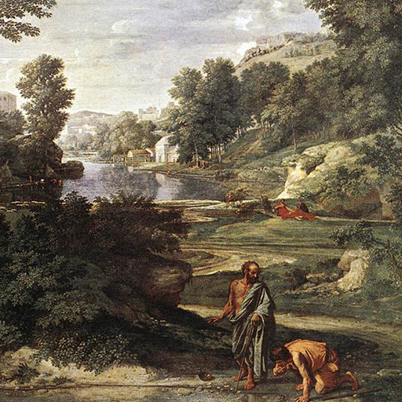

第60卦 水澤節：剛好，就好
上卦：水（☵） ・ 下卦：澤（☱）

核心意義
水的流動需要堤岸的引導，生命也需要適度的節制。此刻的課題在於為生活建立合宜的節度：該用的用、該省的省、該停的停。節制不是壓抑，而是讓有限的資源發揮最大的效用，讓自由在紀律中長久。
「我以有度的節制安頓生活，在自律中守護長久的自由。」
祝福
願你在自律與自由之間，找到讓自己舒服又踏實的節奏。
五大類別指引
感情
關係中需要適度的節奏與界線，過度緊密或過度疏離都不健康。為彼此保留恰當的空間；相處時全心投入、獨處時各自成長，有節奏的關係最能細水長流。
為彼此保留恰當的空間與節奏：
- 相處時全心，獨處時成長。
- 有節奏的關係細水長流。
事業
工作上需要建立節奏與優先序，什麼都做往往什麼都做不好。為時間設下界線；專注於最重要的事、拒絕過度的承諾，有節制的投入反而能產出最好的成果。
為時間設下界線與優先序：
- 拒絕過度的承諾。
- 有節制的投入產出最好成果。
健康
健康的核心在於節制。飲食有度、作息有時、活動有節。檢視生活中過度的部分；減少暴飲暴食與熬夜，把生活調整到合宜的節奏，身體自然會回報你。
飲食有度、作息有時、活動有節：
- 檢視生活中過度的部分。
- 把生活調整到合宜節奏。
財運
財務的穩健來自節制，量入為出是根本。為支出設下清楚的預算；區分需要與想要、減少衝動消費，節制不是吝嗇，而是讓每一分錢都用在真正重要的地方。
為支出設下清楚的預算：
- 區分需要與想要。
- 節制讓每分錢用在重要處。
人際
人際往來需要適度的節制，過度的付出或過度的索取都會失衡。為自己的時間與心力設界線；學會適時說不、保留自己的空間，有分寸的關係才能長久。
為時間心力設界線，學會說不：
- 不過度付出也不過度索取。
- 有分寸的關係才能長久。